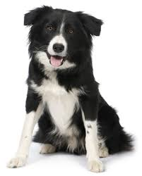

Це головна сторінка
Тут ви знайдете інформацію про собаку
і про їх походження

перша собака
це чорно-біла собака.
друга собака
Це собака з новорічною шапочкою
третя собака
Це собака між другим і першим домом, вона біла з чорними вушками
четверта собака
Це велика собака з повідоном і вона майже вся чорна